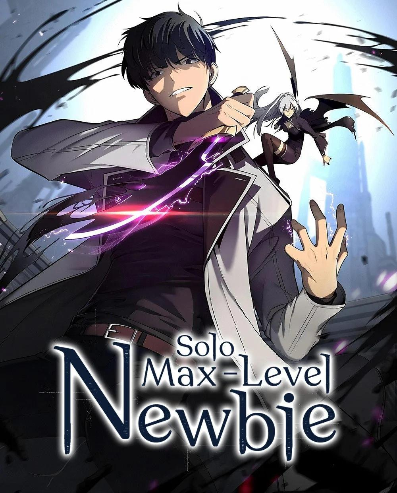

The Max Level Hero Has Returned!
The story description will appear here. Discover the adventures, challenges, and journey of your favorite characters as you explore this story.

The story description will appear here. Discover the adventures, challenges, and journey of your favorite characters as you explore this story.